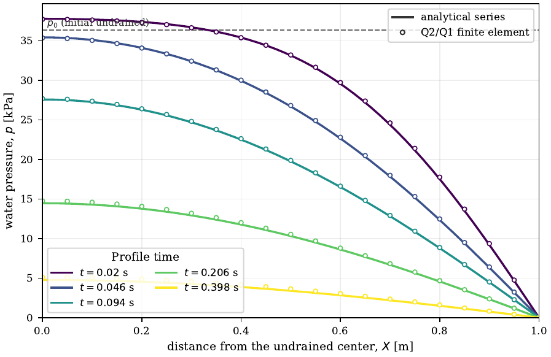
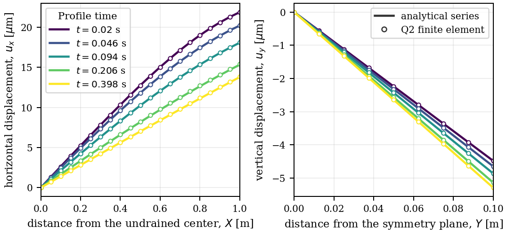
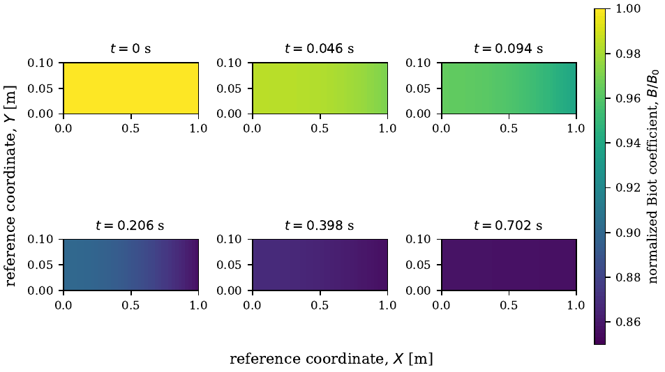
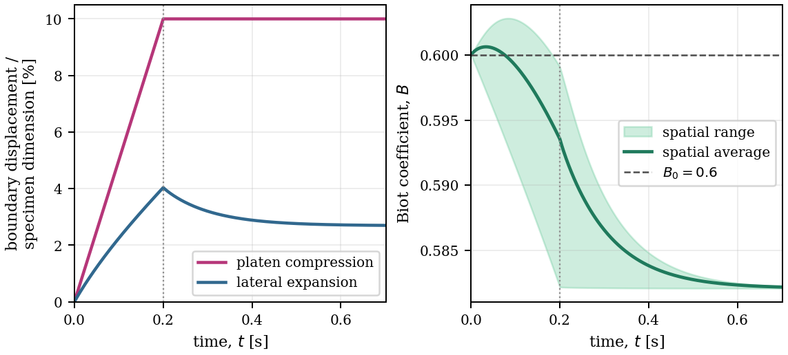

1 · Water-filled Mandel benchmark
The flagship example: the plane-strain Mandel consolidation problem solved with a Q2 displacement / continuous Q1 water-pressure discretization and the state-based closed-form Biot coefficient from the matched logarithmic laws. The spatial water-pressure and displacement profiles are compared with the analytical Cheng–Detournay series, and a finite-deformation continuation reports the departure of the Biot coefficient from its small-strain reference together with two-dimensional Biot-coefficient and solid-density snapshots.
ADConstrainedSkeletonBiotMaterial)
and a centered difference verify the result.
MOOSE implementation files
Every object this problem depends on, with its role in the solve.
-
ADSolidReferenceKinematics
Computes the deformation gradient
F, its JacobianJ, the material rateJ̇,F⁻¹, andJ F⁻¹from the displacement gradients. Why: supplies the solid-reference kinematics used by every pull-back and the effective-stress relations. - ADLocalElasticMineralBiotMaterial Elastic mineral state: intrinsic solid density, solid volume fraction, material-mass and mineral-EOS residuals, their partial derivatives, and the production closed-form Biot coefficient. Why: the verification specialization of the local constitutive update; the matched logarithmic mineral law supplies the state and its pressure-dependent coefficient.
-
ADConstrainedSkeletonBiotMaterial
Solves the dense AD-valued implicit local tangent at fixed intrinsic phase pressure and fixed referential solid mass, returning an independent Biot coefficient diagnostic.
Why: verifies the production expression through
B = 1 − φs0 dJ̄/dJat fixed pressure and plastic state. -
ADVolumetricBarotropicSkeletonStressMaterial
Pressure-coupled double-prime skeleton stress from the matched logarithmic model and its compatible reduced potential.
Why: produces the double-prime first Piola stress
P″entering the effective-stress relations. -
ADReferenceSolidStressMaterial
Combines
P″with the nonlinear pore-pressure contribution to assemble the total first Piola stress. Why: forms the total mixture stress that the momentum residual integrates. -
ADBinarySolidSpatialMassMaterial
Evaluates solid partial density from its reference value divided by the deformation Jacobian, enforcing constant referential solid mass.
Why: enforces
Jρs = ρs0at each integration point. -
ADBiotPressureStorageMaterial
Exact single-water mass storage pulled to the reference:
J(1−φs)ρ̄f(p)and a separate continuous-rate diagnostic. Why: supplies the water accumulation without a prescribed Biot storage modulus. - ADReferenceBalanceState Supplies total first Piola stress, current and previous reference fluid mass, and Darcy mass flux to the shared balance kernels.
- ReferenceMomentum and ReferenceFluidMass Integrate total stress and the backward difference of complete fluid mass with reference Darcy transport. The kernel source agrees with the anisotropic companion apart from application registration.
- ADBiotDarcyReferenceFluxMaterial Pulls the Q1 pressure-gradient Darcy mass flux to the solid reference configuration. Why: provides the reference Darcy flux for the water-pressure weak residual.
- ADMaterialScalarL2Error Element-integral L2 error of a material property against an analytical function. Why: reports the Biot-identity, mineral-EOS, and referential-mass diagnostics used by the acceptance gates.
- NonlinearBiotADApp Application object that registers every material, kernel, and postprocessor. Why: the executable entry point of the minimal MOOSE application.
Input decks
- mandel_water_q2_q1.i The full water-filled plane-strain Mandel problem: Q2 displacement, continuous Q1 pressure, exact solid-density elimination, conservative reference fluid accumulation, and the fixed-pressure elastic Biot tangent.
- implicit_biot_q2_q1_jacobian.i The PETSc Jacobian-tester deck that verifies the outer automatic-differentiation Jacobian against finite differences.
-
tests
The MOOSE test specification (
smoke,conservative_step,verification,jacobian) with the acceptance requirements.
Python scripts that produce the results and figures
- check_mandel_implicit_biot.py Runs the Mandel deck on coarse/fine/finer meshes and time steps, evaluates the analytical pressure/displacement agreement, Biot identity, centered-difference tangent, solid-mass conservation, and mineral-EOS residual, and reports the acceptance gates.
- reproduce_mandel_publication.py Regenerates the analytical platen history, small-load profiles, finite-deformation continuation, mesh/time sensitivity, and curated validation records.
- curate_mandel_profiles.py Curates the publication pressure, displacement, and large-deformation profile CSVs from MOOSE line-sampler output.
- extract_mandel_density_contours.py Extracts the solved intrinsic-solid-density ratio and Biot-coefficient fields at element centers from the Exodus output.
- plot_mandel_extended_results.py Plots the Mandel displacements and the finite-deformation Biot response (profiles, contours, and departure curve).
Figures



In the drained elastic limit, the matched logarithmic laws give B = 1 − 0.4 J−5/9. Compression (J < 1) therefore lowers B below its initial value 0.6: the porous body contracts more than the mineral, increasing the solid volume fraction. Positive pore pressure temporarily opposes this decrease; drainage removes that contribution while axial compression remains imposed. The elastic change is reversible on unloading.

Validation data
The full benchmark's maximum pressure, side-displacement, and load errors are 3.71%, 0.646%, and 0.237%, respectively, below their acceptance limits of 4.0%, 0.8%, and 0.3%. Pressure error is normalized by the analytical pressure scale; displacement and load errors use their reference values. At ten-percent platen compression, the final mean coefficient is 0.58219, a 2.97% departure from B0 = 0.6. The matched logarithmic laws recover classical single-mineral storage at the reference state.
- mandel_implicit_biot.ymlCurated verification summary (tolerances, metrics, gates).
- mandel_pressure_profiles.csvAnalytical-vs-computed pressure profiles.
- mandel_displacement_profiles.csvAnalytical-vs-computed displacement profiles.
- mandel_large_deformation.csvFinite-deformation continuation data.
- mandel_biot_contours.csvBiot-coefficient field snapshots.
- mandel_density_contours.csvSolid intrinsic-density field snapshots.
Reproduce
Build, run, verify, and plot this example with:
make build
make test # Mandel smoke / initial-mass / verification / Jacobian tests
make mandel # full benchmark, continuation, and publication-data curation
make figures # regenerate the figures aboveSee Reproduce for the complete manuscript pipeline.